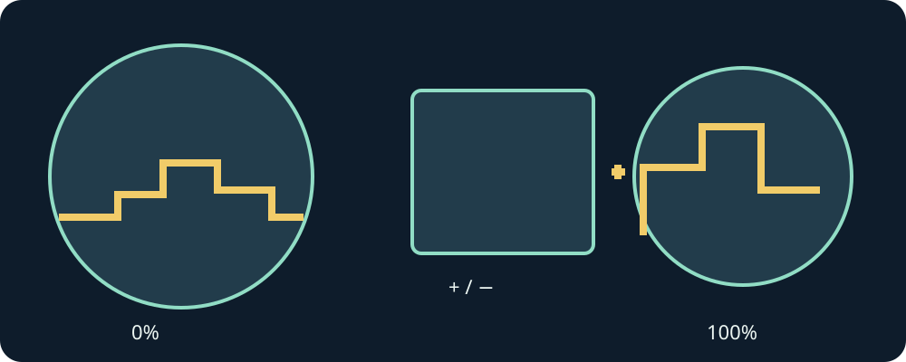

Вращайте коронку или безель для масштаба. В меню это прокрутка; сенсорные + и - тоже работают.
0% — вся загруженная область. 100% — исходная камера. Двери и трубы могут загрузить другую область.
В большинстве игр B — прыжок, Y — бег или захват. Удерживайте направление и действие разными пальцами.
Пауза — значок паузы или Назад Android. Возобновление продолжает игру. Выход находится внизу коллекции.
Персональный пакет содержит ваши локальные картриджи. Публичной версии нужны собственные совместимые файлы.
Передайте картриджи в CartridgeInbox, затем проверьте переданные картриджи или перезапустите приложение. Существующие файлы сохраняются.
Физическое управление часами и длительная производительность пока не проверены. Эта версия экспериментальная.
Физическое управление часами и длительная производительность пока не проверены. Эта версия экспериментальная.
Обновление подписанного APK сохраняет данные. Удаление приложения или его данных удаляет локальные картриджи и сохранения.
/sdcard/Android/data/com.vhaloo.mariocompilationultra.wear/files/CartridgeInbox/